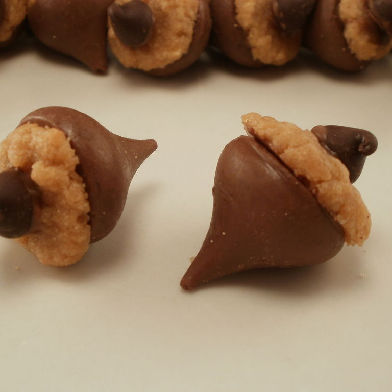

KISSES Acorn Treats
Ingredients
- Hershey's Kisses Brand Milk Chocolates or Hershey Brand Pumpkin Spice Flavored Mini Candies
- Icing or decorators frosting
- Mini vanilla wafer cookies
- Reese's Peanut Butter Chips of Hershey's Butterscotch chips
Cooking Instructions
- Prepare icing and place in pastry bag with small tip. Remove wrappers from candies.
- Place mini vanilla wafer cookies on tray or plate with flat side of cookie toward the top. Squeeze small amount of icing onto bottom of candy piece. Immediately press candy bottom onto vanilla wafer cookie. Allow icing to set.
- Place small dab of icing on bottom of peanut butter chip or butterscotch chip; immediately attach to top of cookie to finish acorn.
Photo Courtesy of sandgurl on instructables.com